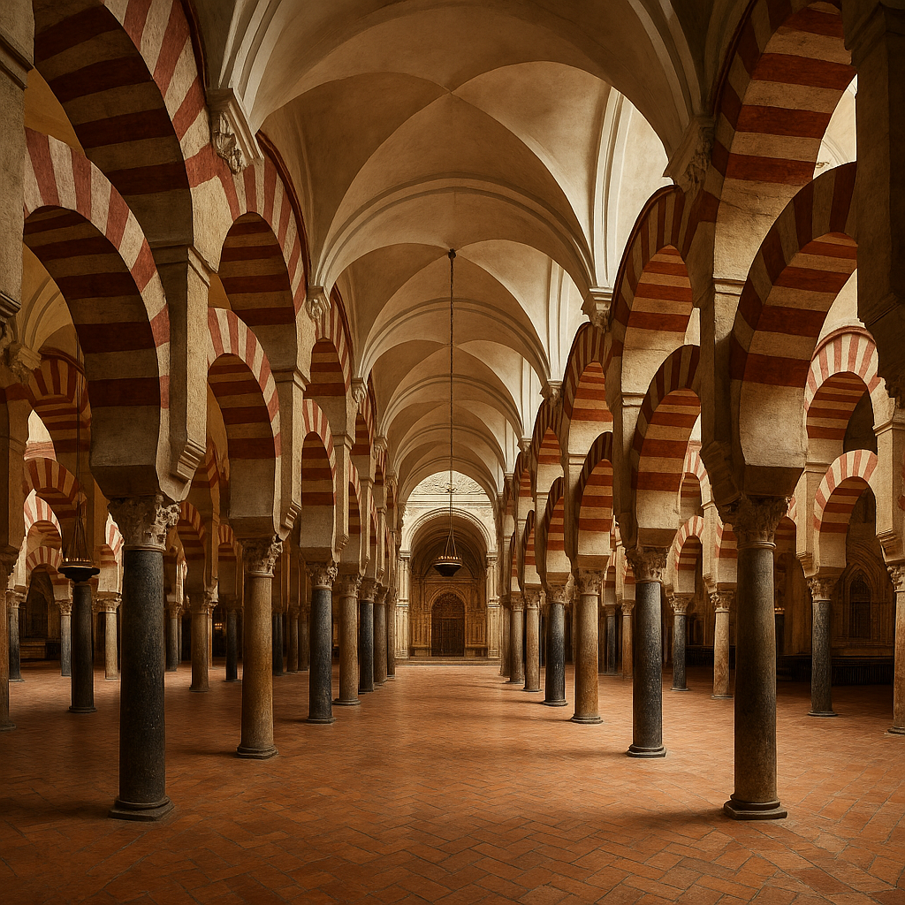
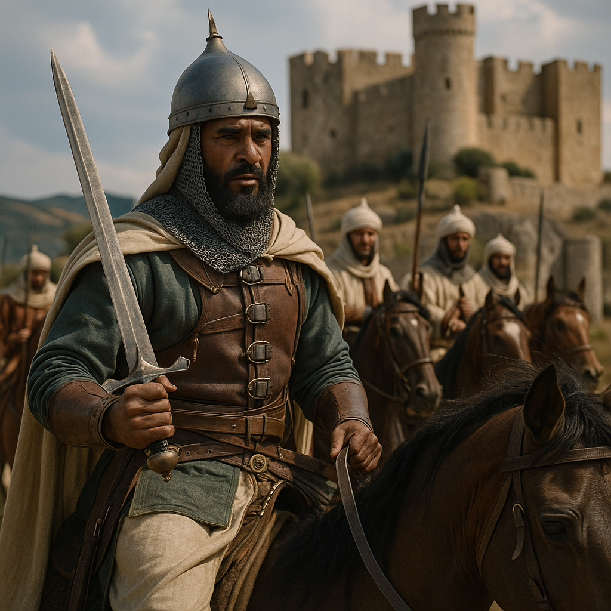
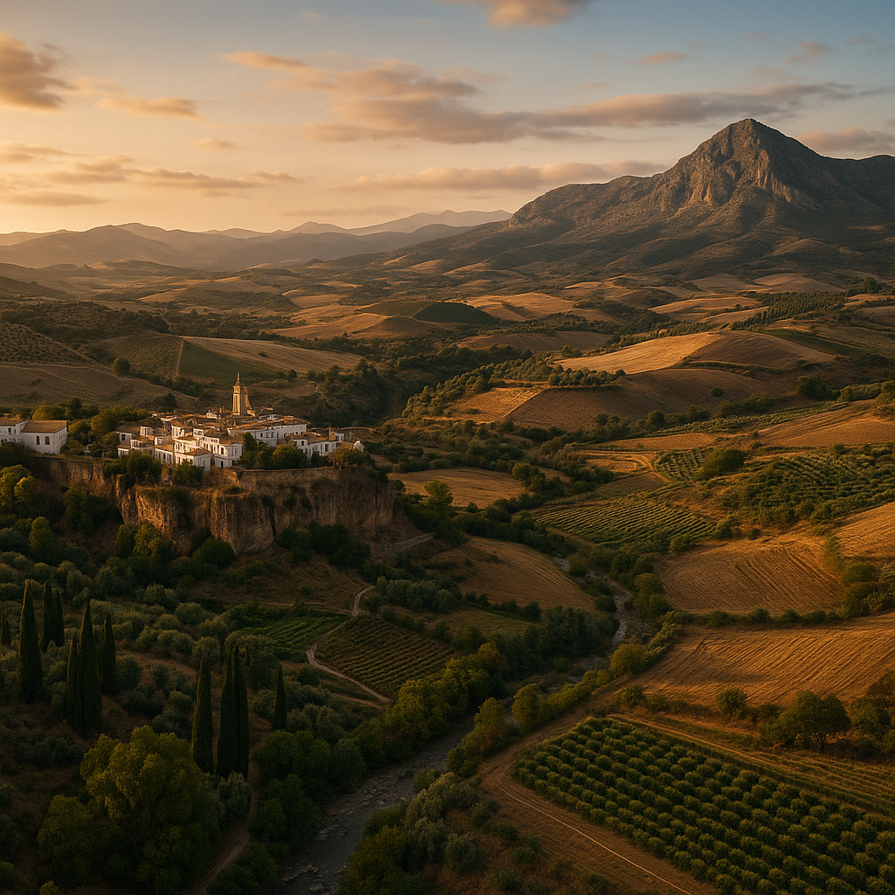

In the story of Europe’s rise from the ashes of the Dark Ages, one chapter is too often left in the margins: the extraordinary legacy of Islamic Spain, or Al-Andalus.
While much of medieval Europe struggled through feudal warfare, illiteracy, and superstition, the Iberian Peninsula under Muslim rule blossomed into one of the most sophisticated centers of knowledge, tolerance, and scientific inquiry the world had seen.
As a lifelong lover of history and storytelling, I’ve always been fascinated by moments when unlikely bridges sparked cultural flourishing.
Al-Andalus is one such bridge, a bridge between East and West, past and future, faith and reason.
The Rise of Al-Andalus: When Moors Crossed the Strait 🌍
In 711 CE, the Berber general Tariq ibn Ziyad crossed the Strait of Gibraltar with an army of North African and Arab Muslims, defeating the Visigothic king Roderic.
This marked the beginning of nearly eight centuries of Islamic presence in Spain.
Under the Umayyad Caliphate, particularly the reigns of Abd al-Rahman III and Al-Hakam II, Córdoba emerged as a cosmopolitan powerhouse rivaling Baghdad and Constantinople.
Unlike the religious zealotry of later centuries, this period was defined by convivencia: a pragmatic coexistence of Muslims, Jews, and Christians that fostered cross-pollination of ideas.
Science & Rational Inquiry: A Beacon in the West 🔬🧠
The House of Wisdom in Baghdad may get most of the glory, but Córdoba’s libraries, some containing over 400,000 manuscripts, were just as luminous.
Scholars like:
- Al-Zahrawi (Abulcasis), the father of modern surgery
- Maslamah al-Majriti, the astronomer-mathematician
- Ibn Firnas, the polymath who attempted flight
- Averroes (Ibn Rushd), whose commentaries on Aristotle revolutionized European philosophy
... laid the intellectual groundwork for Europe's Scholastic movement and later the Renaissance.
Agricultural Innovation: Feeding a Civilization 🌾💧
While Northern Europe was still reliant on rudimentary farming, Muslim Spain was pioneering scientific agriculture.
Innovations included:
- Sophisticated irrigation systems like qanats and water wheels (norias)
- Introduction of new crops: rice, sugarcane, citrus, cotton
- Written treatises on botany and soil management by agronomists like Ibn al-Awwam
These advances transformed Spain into an agrarian superpower and introduced Mediterranean staples still enjoyed today.
Architecture, Urban Planning & Engineering 🏙️✨

The Moors didn’t just build cities.
They designed for beauty and function:
- The Great Mosque of Córdoba: a marvel of horseshoe arches, geometry, and sacred spatial design
- The Alhambra of Granada: a poetic marriage of light, water, and ornament
- Urban planning included paved roads, public lighting, sewage systems, and even gardens designed for climate cooling
Form and function were married in a way that deeply influenced Gothic and Renaissance architecture.
Medicine, Pharmacy & Public Health ⚕️📚
Hospitals, called bimaristans, offered universal care, and Muslim physicians emphasized empirical observation.
- Al-Zahrawi’s 30-volume surgical manual was used in European universities until the 16th century
- Public baths and pharmacies were institutionalized in Córdoba and Granada
- Medical ethics, hospital organization, and even mental health treatment were discussed in early Arabic texts
Military Innovations & Strategic Thinking ⚔️🛡️

The military prowess of Moorish Spain was matched by its strategic innovations:
- Use of Damascus steel swords
- Fortifications with advanced defensive architecture
- Sophisticated cavalry tactics and logistics
These methods influenced the Christian Reconquista and later European military doctrine.
Knowledge Migration: From Córdoba to Paris 🛫📝
As Christian forces retook cities like Toledo, they found libraries filled with Arabic, Greek, and Persian texts.
This led to the famous Toledo School of Translators, where figures like Gerard of Cremona and Michael Scot translated Islamic scientific and philosophical works into Latin.
These texts seeded the European Renaissance and transformed universities in Paris, Bologna, and Oxford.
Decline & Erasure: A Legacy in Shadows 🌙
The fall of Granada in 1492 marked the end of Muslim rule in Spain.
What followed was:
- The Spanish Inquisition
- Mass expulsion of Jews and Muslims
- Systematic erasure of Al-Andalus’ contributions from Western history books
Yet the linguistic, culinary, architectural, and scientific fingerprints of this era remain visible across Spain and Europe today.
Conclusion: Reclaiming the Narrative 🌏🔬

Islamic Spain wasn’t an outlier.
It was a catalyst.
A crossroads where science, tolerance, and pluralism birthed Europe’s intellectual awakening.
In an age of polarization and selective memory, revisiting the legacy of Al-Andalus reminds us that progress thrives in diversity, and that some of history’s most luminous chapters are still waiting to be retold.